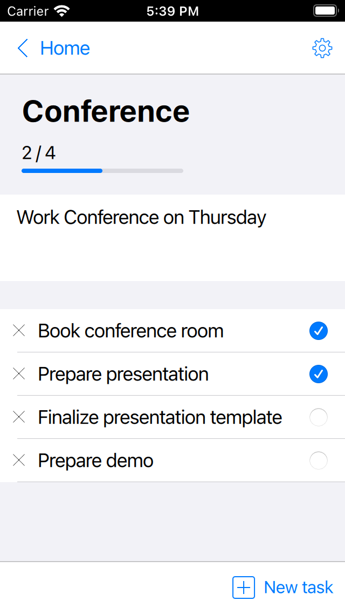

Qt Quick Controls - To Do List
To do list application for iOS.
This example demonstrates how to create a simple to do list application for iOS using the iOS Style.

The example also shows how an in-memory SQL database can be created and used purely through QML, without needing C++, through the use of LocalStorage.
Running the Example
To run the example from Qt Creator, open the Welcome mode and select the example from Examples. For more information, visit Building and Running an Example.